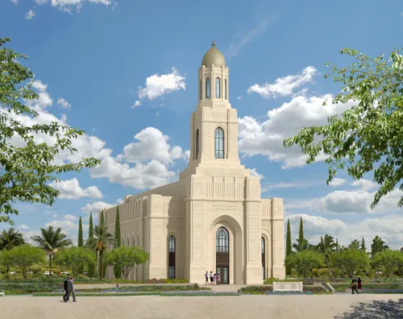
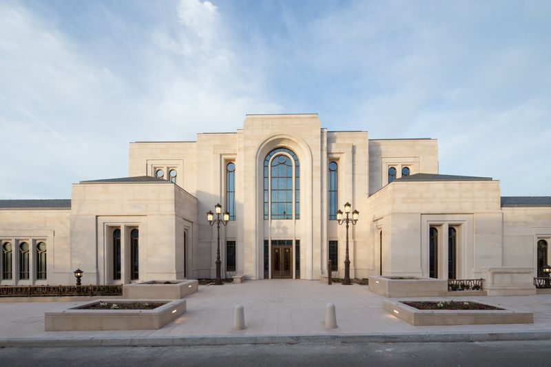

Temples
☰
Home
Old
New
Large
Small
Temples Collection
Colonial Juarez Temple
Montreal Quebec Temple
Temple of the Sacred Heart
Salt Lake City Temple
Sydney Australia Temple

Frankfurt Germany Temple
Tokyo Japan Temple

Paris France Temple
Lima Peru Temple